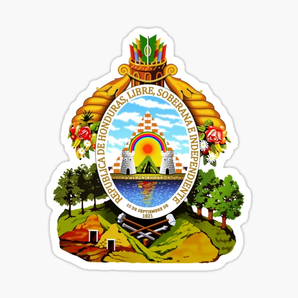

Análisis y Significado del Coro
El coro del Himno Nacional de Honduras es la parte más solemne y recurrente de la composición, un canto que se repite antes de cada una de las siete estrofas. Escrito por el poeta Augusto C. Coello y con música del maestro Carlos Hartling, el himno fue oficializado el 13 de noviembre de 1915 bajo el decreto número 42. El coro, en particular, funciona como una introducción majestuosa y un resumen visual de la patria, basándose en la simbología de la bandera y el escudo nacional.
La primera línea del coro, "Tu bandera es un lampo de cielo", establece inmediatamente el paralelismo entre el pabellón nacional y la bóveda celeste. La palabra "lampo" evoca una luz o un resplandor repentino, como si el cielo se hubiera materializado en el estandarte. Esta frase no solo describe el color azul de la bandera, sino que también le otorga un carácter casi divino, como si fuera una porción del firmamento. El azul simboliza la pureza, la inmensidad y, de manera más literal, los dos océanos que bañan las costas de Honduras: el Atlántico al norte y el Pacífico al sur. Esta dualidad marítima es un rasgo geográfico distintivo que el himno exalta.
A continuación, la frase "por un bloque de nieve cruzado" introduce la franja blanca central de la bandera. La "nieve" es una metáfora de la pureza, la paz y la integridad. En un sentido geográfico, esta franja representa la franja de tierra que une ambos océanos. Es el territorio nacional, el corazón del país. La paz que se anhela y se celebra en este verso es un valor fundamental para la nación, un deseo de convivencia y armonía que la bandera simboliza.
La descripción de la bandera continúa con "y en tu seno sagrado se anida / cinco estrellas de pálido azul". El "seno sagrado" se refiere a la franja blanca, el lugar central y protegido donde residen las cinco estrellas. Estas estrellas tienen un significado histórico y político de gran relevancia. Representan a las cinco repúblicas originales de la Federación Centroamericana: Guatemala, El Salvador, Nicaragua, Costa Rica y, por supuesto, Honduras. La inclusión de estas estrellas en la bandera hondureña es un recordatorio del ideal unionista de Francisco Morazán, un sueño de una patria grande y unida en el istmo. El "pálido azul" de las estrellas subraya el carácter celestial y el anhelo de hermandad entre las naciones hermanas.
El coro también hace referencia al Escudo Nacional en los siguientes versos. "En tu emblema, que un mar rumoroso / con sus ondas bravías escuda", se describe el escudo, protegido por las aguas de los dos océanos. El "mar rumoroso" con sus "ondas bravías" evoca la fuerza y la protección natural que estas masas de agua brindan al país. Es una imagen de la geografía hondureña, pero también de su carácter indomable y su seguridad frente a amenazas externas. Las olas bravías simbolizan la defensa y la soberanía del territorio.
El "emblema" del que se habla es el Escudo Nacional. Este escudo, de forma ovalada, contiene la leyenda "REPÚBLICA DE HONDURAS, LIBRE, SOBERANA E INDEPENDIENTE, 15 DE SEPTIEMBRE DE 1821". Este verso resume la identidad política del país, declarando su libertad y soberanía desde la fecha de su independencia.
Finalmente, el coro culmina con la descripción de un elemento central del escudo: el volcán y el sol naciente. "De un volcán, tras la cima desnuda, / hay un sol que fulgura, señor". El volcán es una representación del territorio hondureño en sí mismo, un centinela vigilante de la integridad de la nación. La "cima desnuda" del volcán sugiere la fuerza y la firmeza del paisaje. Sobre esta cima, el "sol que fulgura, señor" representa la vida, la libertad y el nacimiento de una nueva era. Para los pueblos indígenas de la región, el sol era una deidad, el centro del universo, y el himno lo retoma para simbolizar la luz que guía a la nación. Su posición "naciente" es una promesa de un futuro brillante y próspero para los hondureños.
Letra
Tu bandera es un lampo de cielo
por un bloque de nieve cruzado;
y se ven en su fondo sagrado
cinco estrellas de pálido azul;
en tu emblema, que un mar rumoroso
con sus olas bravías escuda,
de un volcán, tras la cima desnuda,
hay un astro de nítida luz.